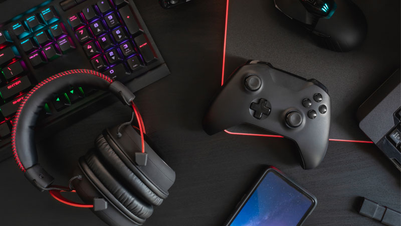

Snuff, el negocio por gamers, para gamers.
Puede que, durante toda tu vida hayas pensado que es imposible generar ganacias de vida sin salir de casa, o en el mejor de los casos, es imposible hacerlo al jugar videojuegos, son solo distracciones que tomamos, ¿verdad?. Y si te dijera que no solamente es posible ganarse la vida jugando, sino, que además es posible para toda persona con el suficiente tiempo libre para viciarse jugando?, muchos piensan que hay algún tipo de estafa tras estas intenciones, pero nosotros planeamos todo desde un principio y sabemos que nuestro negocio no gusta a muchos oportunistas que buscan hacerte creer que pasar el tiempo en lo que más te gusta no te garantizará un ingreso importante. ¡No más espera, pongámonos a jugar!.
